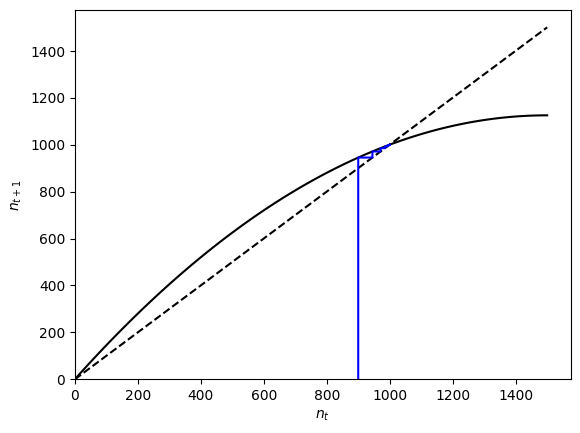
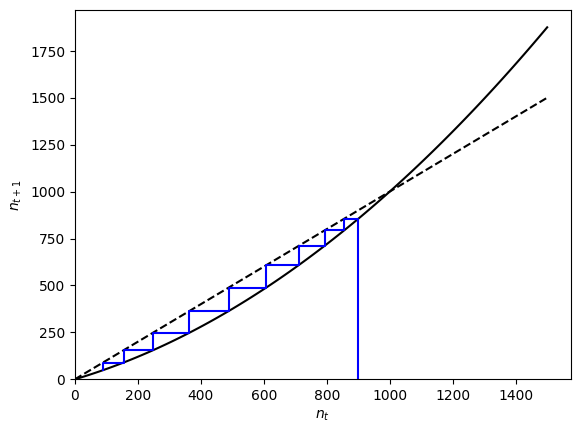
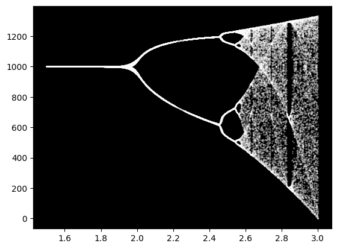
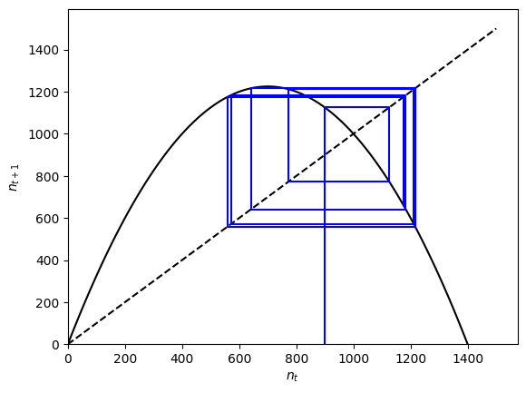
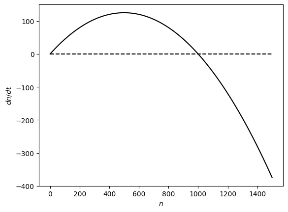
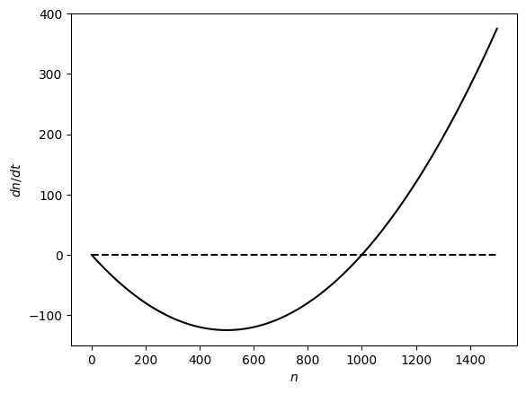

Lecture 8: Local stability
Lecture overview
- Stability
- Local stability analysis in discrete-time one-variable models
- Local stability analysis in continuous-time one-variable models
- Summary
1. Stability
What is stability and stability analysis?
What happens very near an equilibrium?
Starting near an equilibrium, if the system moves towards the equilibrium over time the equilibrium is said to be locally stable.
In contrast, if the system moves away from the equilibrium over time the equilibrium is said to be unstable.
An equilibrium point is said to be globally stable if all initial conditions lead to it.
Our goal: to determine whether a small perturbation away from an equilibrium point will grow or shrink in magnitude over time \(\Longrightarrow\) local stability analysis.
Example
Consider logistic growth in discrete time, with \(K = 1000\) and \(r = 0.5\).
For populations started near carrying capacity (e.g., \(n_t = 900\)), we see that they move closer to the carrying capacity over time.
import numpy as np
import matplotlib.pyplot as plt
# logistic growth recursion
def f(nt,r,k):
return nt * (1 + r * (1 - nt / k))
# Build cobweb plotting function
def cobweb_logistic(n0, r, k, max=np.inf):
t, nnow, nnext = 0, n0, 0 #initial conditions
while t < max:
yield nnow, nnext #current value of n(t) and n(t+1)
nnext = f(nnow,r,k)
yield nnow, nnext #current value of n(t) and n(t+1)
nnow = nnext #update n(t)
t += 1 #update t
# Plot
def plot_logistic_with_cobweb(r, k, n0, ncobs=10, ax=None):
# Plot the curves (add an additional curve past equilibrium to show stability)
xs = np.linspace(0,k*1.5,100) #x values
if ax == None:
fig, ax = plt.subplots()
#1:1 line
ax.plot(xs, xs, color='black', linestyle='dashed')
# recursion
ax.plot(xs, [f(x,r,k) for x in xs], color='black')
# cobweb
cobweb = np.array([i for i in cobweb_logistic(n0, r, k, ncobs)])
plt.plot(cobweb[:,0], cobweb[:,1], color='blue')
#aesthetics
ax.set_ylim(0,None)
ax.set_xlim(0,None)
ax.set_xlabel('$n_t$')
ax.set_ylabel('$n_{t+1}$')
return ax
plot_logistic_with_cobweb(n0=900,r=0.5, k=1000, ncobs=1100) plt.show()

As we discussed when introducing cobweb diagrams, in this case we move to the right when \(n_t<K\) because the recursion (solid line) is above the 1:1 line (dashed), i.e., \(n_{t+1}>n_t\). Similarly, we move to the left when \(n_t>K\) because the recursion is below the 1:1 line. Now, we know the 1:1 line has a slope of 1. Since the recursion crosses this line going from above to below (as we move to the right) at the equilibrium \(n_t=K\), we know the slope of recursion is less than 1 at that point, \(\(\left.\frac{\mathrm{d}n_{t+1}}{\mathrm{d}n_t}\right|_{n_t=K}<1\)\)
In this case we also see that the slope is positive.
Now what about if we had \(r = -0.5\)?
plot_logistic_with_cobweb(r=-0.5, k=1000, n0=900) plt.show()

We see that we now move away from the equilibrium at \(n_t=K\). Because the recursion is now steeper than the 1:1 line at that point, we know the slope of the recursion at \(n_t = K\) is now greater than 1
So how does knowing the slope of the recursion at the equilibrium help? (e.g. at \(n_t = K\)).
If we have an equilibrium point, call it \(a\), and we have a starting condition, \(x\), which is near \(a\), then we can use the Taylor Series to rewrite the recursion.
Mathematical aside: Taylor series
where \(f^{(k)}(a)\) is the \(k^{\mathrm{th}}\) derivative of the function with respect to \(x\), evaluated at point \(a\). (See section P1.3 in the text for more information).
If we start near enough to the equilibrium, \((x - a)^k\) will be tiny for \(k > 1\) and the function will be dominated by the first two terms in the series, with \(k = 0\) and \(k = 1\):
using \(f^{(0)}(a) = f(a)\) and the short-hand notation \(f'(a) = f^{(1)}(a)\) to describe the slope of \(f\) at \(x=a\).
This is great! No matter how complicated and non-linear an equation we have, we can get an approximate equation that describes the dynamics near an equilibrium point. This equation is linear in \(x\) and can therefore be easily analysed. Let's see how this works in discrete- and continuous-time models.
2. Local stability analysis in discrete-time one-variable models
Given a recursion equation in one variable, \(x(t+1) = f(x(t))\), with an equilibrium \(\hat{x}\), when will a small perturbation (\(\epsilon\)) away from the equilibrium grow in magnitude over time?
At time \(t\), say that the population is a small distance from the equilibrium: \(\hat{x} + \epsilon(t)\) (Note that \(\epsilon(t)\) might be negative).
At time \(t+1\), the population will be at \(\hat{x} + \epsilon(t+1)\), which equals \(f(\hat{x} + \epsilon(t))\).
Using the Taylor Series of \(f(\hat{x} + \epsilon(t))\) around \(\epsilon(t)=0\):
We know that \(f(\hat{x}) = \hat{x}\) because \(\hat{x}\) is an equilibrium, which implies
This is the recursion for exponential growth, with reproductive factor \(\lambda = f'(\hat{x})\). So knowing that
means the perturbation will:
-
move from one side of the equilibrium to the other (i.e., oscillate) if \(\lambda\) is negative
- grow if \(\lambda<-1\) \(\implies\hat{x}\) unstable
- or shrink if \(-1<\lambda<0\) \(\implies\hat{x}\) locally stable
-
stay on the same side of the equilibrium if \(\lambda\) is positive
- and shrink if \(0<\lambda<1\) \(\implies\hat{x}\) locally stable
- or grow if \(1<\lambda\) \(\implies\hat{x}\) unstable
Stability in discrete time therefore requires the slope of the recursion to be between -1 and 1 at the equilibrium, \(-1<\left.\frac{\mathrm{d}x_{t+1}}{\mathrm{d}x_t}\right|_{x_t=\hat x}<1\).
E.g., logistic growth
Let's now return to the logistic growth model in discrete time as an example. Here the recursion is
When \(r = 0.5\) we saw that \(\hat n = K\) was locally stable and the slope of the recusion at \(n = K\), \(\lambda = f'(K)\), was between 0 and 1.
Whereas, when \(r = -0.5\) we saw that \(\hat n = K\) was unstable and the slope of the recursion at \(n = K\), \(\lambda = f'(K)\), was greater than 1.
Now let's perform a local stability analysis to see, more generally, when \(\hat{n}=K\) is locally stable.
We first take the derivative of \(f\) with respect to \(n\)
Then we plug in the equilirbium value, \(n=K\)
This will be negative when \(r > 1\), creating oscillations.
The equilibrium will be stable when \(-1 < 1 - r < 1 \implies 0 < r < 2\).
This is consistent with the cob-webs we just observed, as well as the bifurcation diagram we saw in a Lecture 5 (repeated again below), where we see cycling for values of \(r\) greater than 2.
# Sample the periodicity of the oscillations
# by taking unique values after reaching carrying capacity
def log_map(r, n0=900, k=1000):
return np.unique([nt[1] for t, nt in enumerate(n(n0, r, k, max=75)) if t > 30])
# Compute the logistic map for different growth rates in discrete time
r, Nr = np.array([]), np.array([])
for i in np.linspace(1.5, 3, 1000):
nl = log_map(i)
r = np.hstack((r, [i for _ in range(len(nl))]))
Nr = np.hstack((Nr, nl))
# Plot the logistic map on a black background
fig, ax = plt.subplots()
ax.patch.set_facecolor('black')
ax.scatter(r, Nr, s=0.075, color='white')
plt.show()

plot_logistic_with_cobweb(r=2.5, k=1000, n0=900) plt.show()

3. Local stability analysis in continuous-time one-variable models
As in discrete time, we focus on a small perturbation (\(\epsilon\)) away from an equilibrium (\(\hat{x}\)) and determine whether this perturbation will grow or shrink.
If, at time \(t\), the population is a small distance from equilibrium, \(\hat{x} + \epsilon (t)\), the rate of change in \(x\) will be \(\mathrm{d}x/\mathrm{d}t = \mathrm{d}(\hat{x} + \epsilon (t))/\mathrm{d}t\).
In this case, \(f(x)=\mathrm{d}x/\mathrm{d}t\) is the function that we wish to approximate, using a Taylor Series of \(f(\hat{x} + \epsilon (t))\) around \(\epsilon (t)=0\)
Since \(\hat{x}\) is an equilibrium \(f(\hat{x})\) equals zero, leaving just \(f'(\hat{x})\epsilon(t)\) on the right-hand side.
Furthermore, the left-hand side can be expanded and simplified (\(\hat{x}\) is a constant that does not change in time)
Combining the above, the perturbation will change over time at a rate
This is the same as exponential growth with growth rate \(r=f'(\hat{x})\).
So what will the perturbation do then? Well, note that (as shown above) that the change in the perturbation is equal to
The perturbation will therefore
- grow if \(r>0\) \(\implies\hat{x}\) unstable
- shrink if \(r<0\) \(\implies\hat{x}\) locally stable
Stability in continuous time therefore requires the slope of the differential equation to be negative at the equilibrium, \(\left.\frac{\mathrm{d}}{\mathrm{d}x}\left(\frac{\mathrm{d}x}{\mathrm{d}t}\right)\right|_{x=\hat{x}} < 0\).
Unlike in discrete time, there is no possibility for oscillations in continuous time.
E.g., logistic growth
Let's again look at the model of logistic growth
The derivative of \(f\) with respect to \(n\) is
Plugging in \(n=K\) gives
This implies that \(r>0\) causes local stability of \(\hat{n}=K\). We can check this is consistent with a graphical analysis, below.
def f(n,r,k):
'differential equation for logistic growth'
return n*r*(1-n/k)
def plot_logistic_de(r,k,ax=None):
'plot differential equation for logistic growth as function of n'
xs = np.linspace(0,k*1.5,100) #n values
if ax == None:
fig, ax = plt.subplots()
# 0 line
ax.plot(xs, [0 for _ in xs], color='black', linestyle='--')
# differential equation
ax.plot(xs, [f(x,r,k) for x in xs], color='black')
#aesthetics
ax.set_xlabel('$n$')
ax.set_ylabel('$dn/dt$')
return ax
plot_logistic_de(r=0.5, k=1000) plt.show()

plot_logistic_de(r=-0.5, k=1000) plt.show()

6. Summary
Local stability analysis for discrete- and continuous-time models.
- take the derivative of the recursion/differential equation with respect to the variable, \(f'(x)\)
- plug in the equilibrium value of the variable, \(f'(\hat x)\)
- determine the sign and magnitude (sign only in continuous-time)